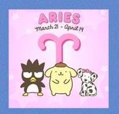
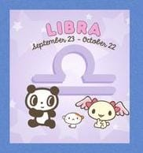
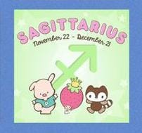
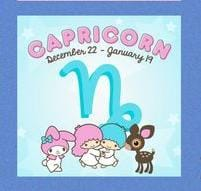
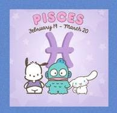

- Aries
- Taurus
- Gemini
- Cancer
- Leo
- Virgo
- Libra
- Scorpio
- Sagittarius
- Capricorn
- Aquarius
- Pisces
Signos zodiacales
Aries(21 de marzo-19 de abril)
Las personas de aries suelen ser valientes, energéticas y aventureras.
Les gusta tomar la iniciativa, enfrentar nuevos retos y luchar por lo que quieren.
Son espontáneas, apasionadas y directas, aunque a veces pueden ser impacientes o impulsivas.
Aries es un signo de fuego, lo que refleja su entusiasmo y vitalidad.

Taurus(20 de abril-20 de mayo)
Taurus se caracteriza por ser una persona paciente, confiable y práctica.
Les gusta la estabilidad, la comodidad y disfrutar de los placeres de la vida.
Son persistentes y determinados, aunque a veces pueden ser tercos o posesivos.
Taurus es un signo de tierra, lo que refleja su conexión con lo material y lo tangible.
Gemini(21 de mayo-20 de junio)
Gemini se caracteriza por ser una persona versátil, curiosa y comunicativa.
Les gusta aprender cosas nuevas, socializar y expresar sus ideas.

Cancer(21 de junio-22 de julio)
Cancer se caracteriza por ser una persona sensible, empática y protectora.
Les gusta cuidar de los demás, crear un hogar acogedor y mantener la armonía en sus relaciones.
Son intuitivos y emocionales, aunque a veces pueden ser inseguros o dependientes.
Cancer es un signo de agua, lo que refleja su profundidad emocional y su capacidad de conexión con los demás.
Leo(23 de julio-22 de agosto)
Leo se caracteriza por ser una persona segura, generosa y creativa.
Les gusta brillar, expresarse y ser reconocidos por sus talentos.
Son apasionados y leales, aunque a veces pueden ser arrogantes o dominantes.
Leo es un signo de fuego, lo que refleja su entusiasmo y vitalidad.
Virgo(23 de agosto-22 de septiembre)
Virgo se caracteriza por ser una persona analítica, organizada y perfeccionista.
Les gusta planificar, resolver problemas y mejorar continuamente.
Son detallistas y responsables, aunque a veces pueden ser críticos o exigentes.
Virgo es un signo de tierra, lo que refleja su enfoque práctico y realista.
Libra(23 de septiembre-22 de octubre)
Libra se caracteriza por ser una persona equilibrada, sociable y diplomática.
Les gusta la armonía, la belleza y las relaciones justas.
Son amables y cooperativos, aunque a veces pueden ser indecisos o complacientes.
Libra es un signo de aire, lo que refleja su capacidad de comunicación y su interés por las ideas.

Scorpio(23 de octubre-21 de noviembre)
Scorpio se caracteriza por ser una persona intensa, apasionada y misteriosa.
Les gusta profundizar en sus emociones, explorar lo desconocido y mantener su privacidad.
Son valientes y decididos, aunque a veces pueden ser celosos o vengativos.
Scorpio es un signo de agua, lo que refleja su profundidad emocional y su capacidad de transformación.
Sagittarius(22 de noviembre-21 de diciembre)
Sagittarius se caracteriza por ser una persona optimista, aventurera y filosófica.
Les gusta viajar, aprender y expandir sus horizontes.
Son independientes y sinceros, aunque a veces pueden ser imprudentes o irresponsables.
Sagittarius es un signo de fuego, lo que refleja su entusiasmo y vitalidad.

Capricorn(22 de diciembre-19 de enero)
Capricorn se caracteriza por ser una persona ambiciosa, disciplinada y responsable.
Les gusta alcanzar sus metas, trabajar duro y mantener la estabilidad.
Son perseverantes y prácticos, aunque a veces pueden ser pesimistas o rígidos.
Capricorn es un signo de tierra, lo que refleja su enfoque realista y su conexión con lo material.

Aquarius(20 de enero-18 de febrero)
Aquarius se caracteriza por ser una persona innovadora, independiente y humanitaria.
Les gusta experimentar, pensar de manera original y contribuir al bienestar de la sociedad.
Son visionarios y progresistas, aunque a veces pueden ser excéntricos o distantes.
Aquarius es un signo de aire, lo que refleja su capacidad de comunicación y su interés por las ideas.
Pisces(19 de febrero-20 de marzo)
Pisces se caracteriza por ser una persona compasiva, intuitiva y artística.
Les gusta soñar, ayudar a los demás y expresar sus emociones a través del arte.
Son sensibles y empáticos, aunque a veces pueden ser escapistas o indecisos.
Pisces es un signo de agua, lo que refleja su profundidad emocional y su conexión con el mundo espiritual.
